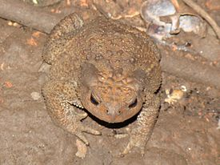

Добро пожаловать!
Вас привествует команда "жабу в каждый дом". Наша цель нашей компании распростронение жаб.
Какие у нас есть жабы: Обыкновенная жаба, или серая жаба, или коровница, — земноводное из рода жабы. Обитает в Евразии и Северо-Западной Африке, на всех остальных континентах этого вида нет. Считается самой крупной жабой в Европе.
Кавказская жаба, или колхидская жаба — земноводное из семейства жабы. Включена в Красную книгу Краснодарского края. Статус «Специально контролируемый — 7». Одно из самых крупных земноводных России. Длина может достигать 125 мм. Окраска — серая или светло-коричневая. Головастики чёрного цвета. Неполовозрелые особи — оранжевые.
Дальневосточная жаба — земноводное, принадлежащее к роду жабы. Обитает в Азии. Ранее считалась подвидом серой жабы.Очень похожа на серую жабу. Отличается от неё меньшими размерами (длина тела 56—102 мм), наличием шипиков на выростах кожи и широкой полосой, идущей от околоушной железы на бок тела, разорванной в задней части на крупные пятна. Барабанная перепонка очень маленькая или покрыта кожей. Верхняя сторона тела тёмно-серая, оливково-серая или оливково-коричневатая с тремя широкими продольными полосами. Нижняя сторона тела желтоватая или сероватая, без рисунка или с мелкими пятнышками в задней части.